SPOR
Formula1 Haberleri
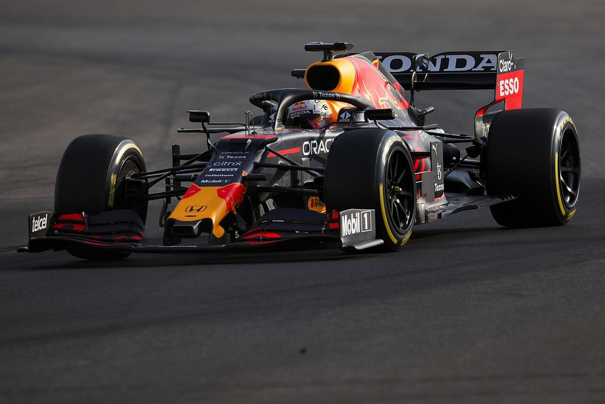
Mercedes taraftarları imza kampanyası başlattılar!
Mercedes taraftarları, tartışmalı şekilde sona eren Abu Dhabi GP'nin ardından şampiyonluğun Lewis Hamilton'a verilmesi için imza kampanyası başlattılar.
Devamını oku...
Honda formula sporundan çekilebilir
RacingNews365.com'un özel haberine göre Honda, spordan çekilse bile 2022 ile 2025 arasında Red Bull ile bağlarını koruyacak.
Devamını oku...
Mercedes 2022 aracına dair ipucu yayınladı
Mercedes, sosyal medya hesaplarından yaptığı paylaşımla, 2022 aracına dair küçük bir ipucu vermişe benziyor.
Devamını oku...
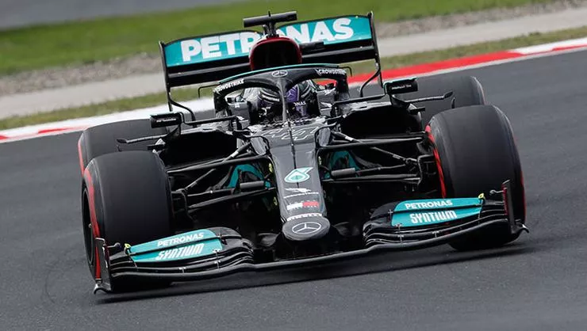
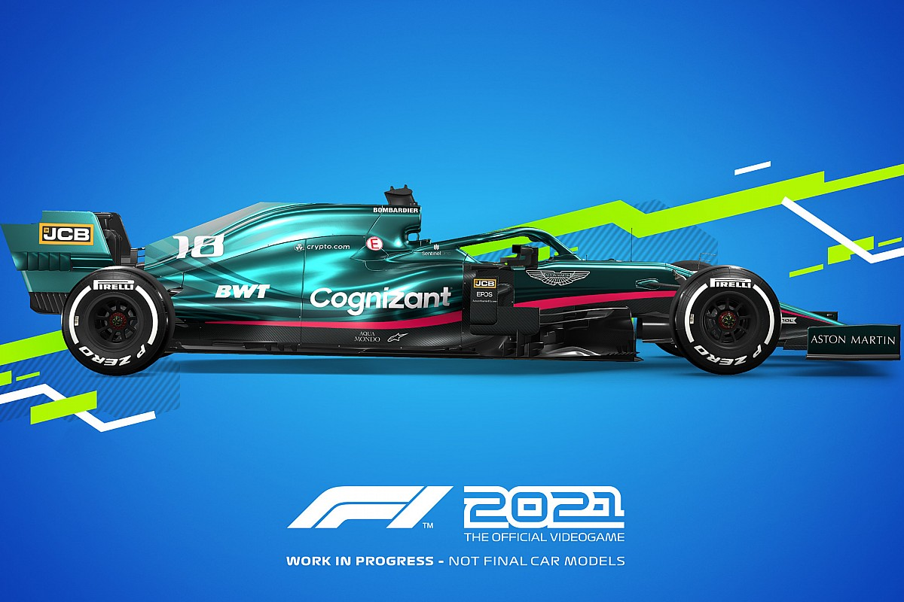
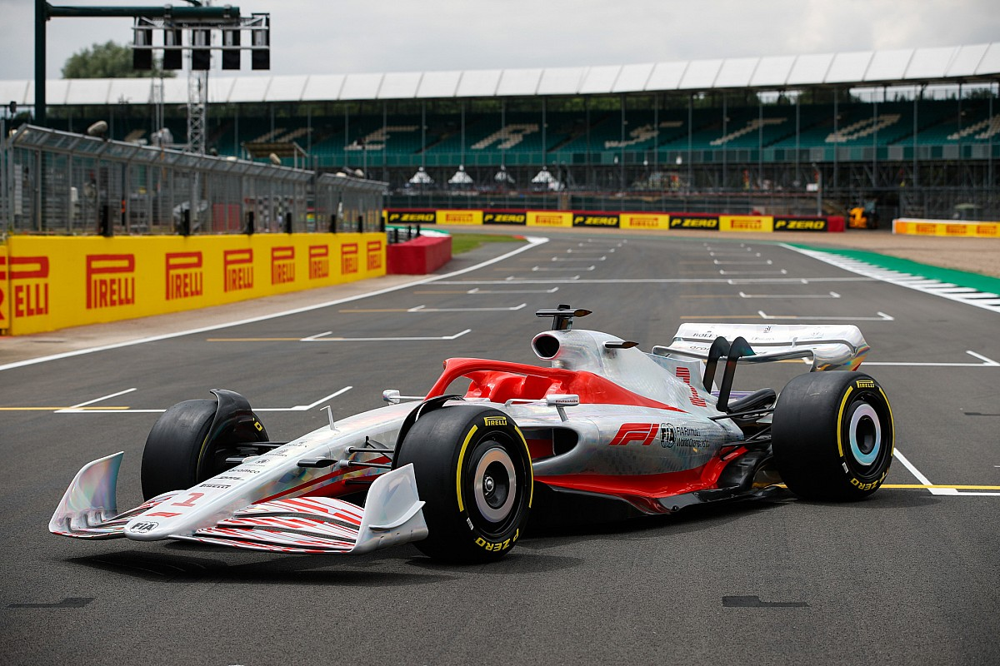
Futbol haberleri
Jorge Jesus kararını veremiyor
Portekizli Jorge Jesus'un istediği ücret el yakıyor. Globo Esporte'ye göre tecrübeli çalıştırıcı, Flamengo'dan ayda 300 bin euro (yılda 3.6 milyon euro) talep etti.
Devamını oku...
"İlk hedef Başakşehir!"
Ara transfer çalışmalarını sürdüren Fenerbahçe'de ilk hedef Başakşehir forması giyen Edin Visca... Sarı-lacivertliler, Boşnak yıldız için Trabzonspor'la transfer yarışına girdi.
Devamını oku...
Maurico Lemos Başakşehiri seçti...
Walfoot'ta yer alan habere göre; sarı-lacivertlilerin sezon başında Belçika ekibi Beerschot'a kiralık gönderdiği Mauricio Lemos, takasla Başakşehir yolunu tutabilir.
Devamını oku...
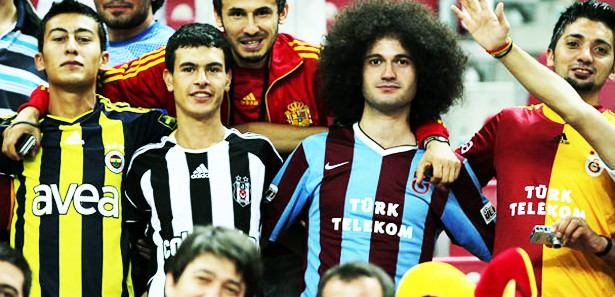
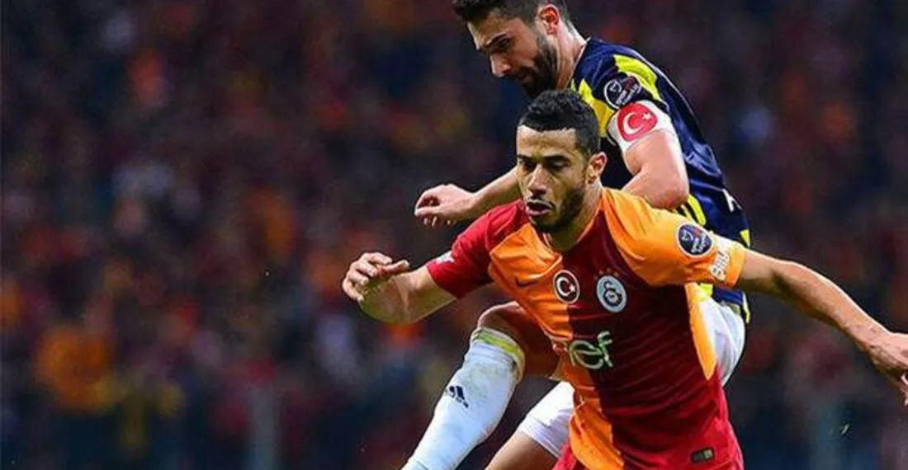
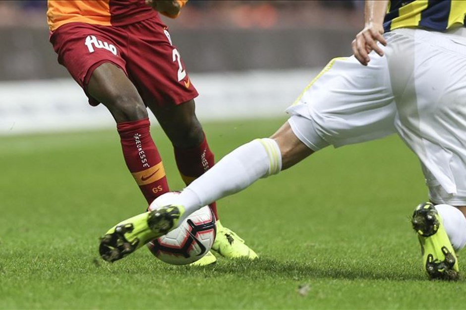
Basketbol Haberleri
Haopel Jerusalem Geliyor!
Basketbol ekiplerinden Hapoel Jerusalem sezon başında kadrosunu Fenerbahçe Beko’nun eski yıldızı Anthony Bennett ile güçlendirmişti. Ancak yıldız oyuncunun İsrail kariyeri uzun sürmedi.
Devamını oku...
İsrail Başarısı...
28 yaşındaki oyuncu bu sezon İsrail ekibiyle Basketbol Şampiyonlar Ligi’nde oynadığı 5 maçta ortalama 14.2 dakika sahada kalırken 7 sayı 4.2 ribaund ortalamalarıyla mücadele etmişti.
Devamını oku...
Cleveland Cavaliers seçimi...
Cleveland Cavaliers tarafından seçildikten sonra beklentilerin çok altında bir NBA kariyerine sahip olan Anthony Bennett, son olarak 2018-19 sezonunda ekiplerinden Agua Cliente Clippers formasını terletmişti.
Devamını oku...
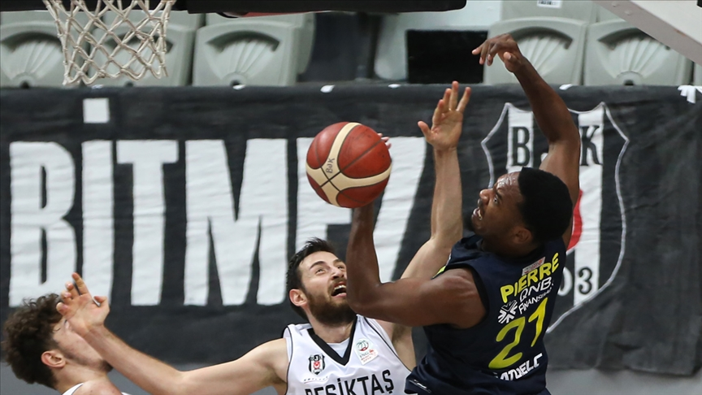
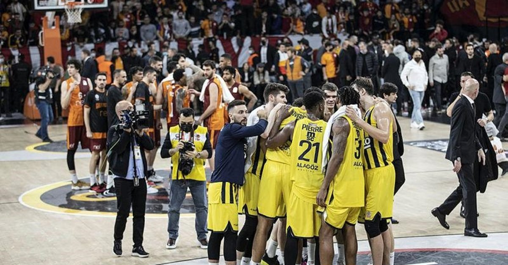
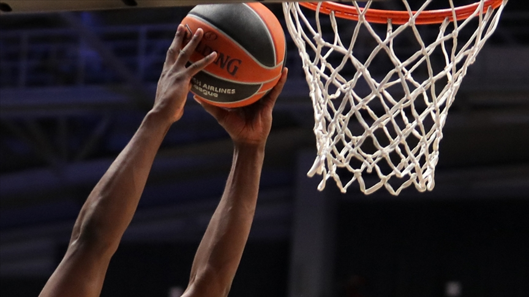
Voleybol haberleri
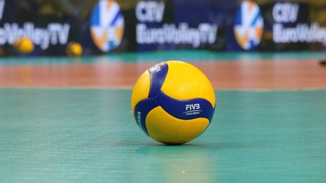
Radke Geliyor!
Kulüpten yapılan açıklamada, daha önce Türkiye'de Jeopark Kula Belediyespor ve Arkas Spor formalarını giyen 1,98 metre boyundaki Radke ile anlaşmaya varıldığı belirtildi.
Devamını oku...
Brezilya kaptanı 4. oldu...
Bursa'ya gelerek antrenmanlara başladığının aktarıldığı açıklamada, son olarak Brezilya kaptanlığını yaptığı takımıyla FIVB Kulüpler Şampiyonası'nda dördüncülük yaşadı.
Devamını oku...
Spor Toto Kazandı!
AXA Sigorta Erkekler Kupa Voley çeyrek final turunda Spor Toto, Fenerbahçe HDI Sigorta'yı 3-0 yendi. Spor Toto, bu sonuçla Dörtlü Final'e yükselen takım oldu.
Devamını oku...
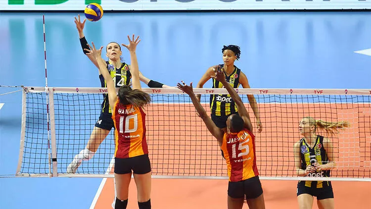
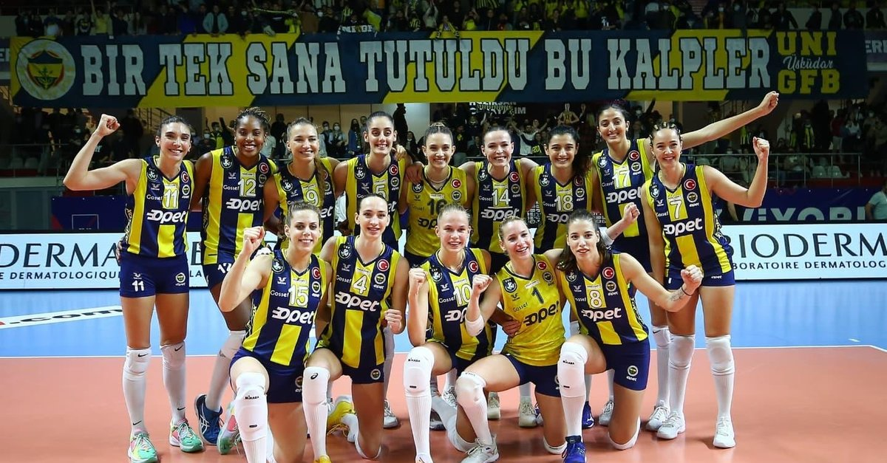
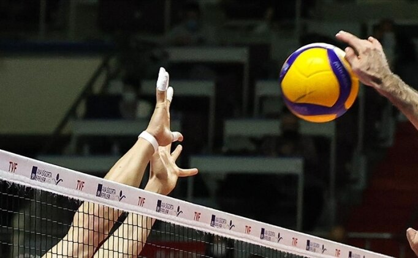